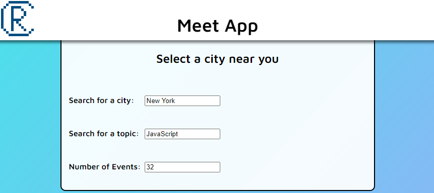

Meet App

The challenge
To create a progressive web application (PWA) with React using a test-driven development (TDD) technique that accesses the Google Calendar API to fetch upcoming events. This application was built over two weeks as a part of CareerFoundry’s web development immersion course.
The process
My process was to write unit test and integration tests that were directly informed by the user stories, then write the necessary code to make the tests pass. Then I wrote acceptance tests to ensure that the required features work properly in my application. The resulting codebase is scalable and easier to debug due to the test-driven development process.
The goal
A responsive web app that provides users with information about upcoming tech events around the world. Additionally, data visualizations inform the user about which cities have the most events and what types of events are the most popular.
My development process
Setting up an authentication server
Setting up an authentication process was important because the Google Calendar API requires authentication for users to access the API. Because we only needed our server to do one thing (fetch data from the CareerFoundry events calendar), I used AWS Lambda to host my authentication functions. This avoided the need to set up my own server, which would be overkill for such a small task and user base. With AWS Lambda, my authentication functions are hosted on a shared computer, and I only need to pay for the resources I use.
Using AWS Lambda did come with a few challenges. The main drawback is that testing functions is difficult when they are not hosted locally on my computer. To test the functions, I needed to deploy the functions to the cloud each time I was ready to test a new build, which takes a few minutes each time. To cut down on the number of test deploys, it was important to carefully read and re-read each function, ensuring that the logic was correct and that there were no hidden typos that were not picked up by my IDE. Can you find the typo in the code snippet?
In this case, event.pathParameters.codes should read event.pathParameters.code. This
is
a simple error that a code editor is not going to pick up on, and I spent my fair share of time waiting for test
deploys to complete to
fix silly mistakes just like this one.
Unit Testing
Unit testing was an important process to ensure that each individual component in my application works as expected. With each component built based on the expected outcomes from the unit tests, my code was made more scalable and less prone to the introduction of bugs. Unit testing was performed with Jest, using the shallow and deep rendering functions provided by Enzyme to test each React component.
While Jest is great for unit testing of individual components, there were some things in the app that could not be tested with Jest. For example, the AWS lambda functions could not be tested because they are not hosted locally on my computer while testing. That means that no matter what, there are potential issues that could arise later due to unforeseen circumstances, and I need to be aware of what sort of edge cases could cause problems for my application.
Integration Testing
With unit testing successfully completed, I could perform integration testing knowing that when errors arise, they would not be due to errors within the individual components, but rather the interaction between them. Integration testing was also performed with Jest, so I was able to write tests describing the expected interactions between my components, then write the code to make those tests pass.
Achieving good coverage on integration testing can be tricky because each element could have interactions with each other element, and often, more than two elements are involved in a process. This makes it easy to miss an interaction, leaving the code vulnerable to bugs from edge scenarios.
For example, within my App component, I wrote a test to assert that a specific number of elements with the class name “event” would be present within the App component after inputting a number in the input field. I was able to make the test pass, but my test itself was erroneous! In reality, I was expecting a certain number of “event” elements to be present within the EventList component, which is a child of the App component, but my test just checked everywhere within the App component to count the event elements. By this logic, I could have run into a scenario where my EventList rendered too few “event” elements, but somewhere else in the App there were “event” elements that made up the difference and caused the test to give a false positive. This would need to have been caused by a poor choice of class name for an element somewhere else in the application, but without a properly written test, this sort of bug would slip through.
Acceptance Testing
Acceptance testing is a great step to bridge the gap between what the developer created and what the client expected from an application. In my case, I wrote acceptance tests using Jest-Cucumber that codified the user stories in the gherkin syntax (Given, When, Then) that would pass only if the features required in the application worked properly. Thankfully, because I had already written the application using a test driven approach, everything was in order by the time I ran acceptance tests, and I did not encounter any problems with this step.
Progressive Web App
With everything working as it should, the next task was to convert the application into a progressive web application (PWA) that could be downloaded by users onto their desktop or mobile home screen, and could still be used offline. Converting the app into a PWA was a relatively simple task where I configured a manifest.json file and registered a service worker for the app. Luckily, most of this process is handled by boilerplate code included in my initial project setup. The challenge was in determining how to make the application work even while offline given that its main functionality relies on data fetched from an external API (Google Calendar). To make the app work offline, I modified the functions that fetch new data to also store the data in the browser’s local storage. Then, if the user is offline, they can access their data stored in the local storage. Next time they have internet access, they are able to download new events again.
Data Visualizations
Adding data visualization to this project was a cool way to add some flash to the page that can keep a user interested for a bit longer, but was not necessary to the overall functionality of the app. I used the Recharts library to create a scatterplot and a pie chart because Recharts is built to make visualizations easy in React. Each chart type has a professional looking default look, but each chart is also highly customizable. All the information needed to create the charts was already embedded in the data fetched from the API, so it was just a matter of extracting the data and formatting it in a way that Recharts can read.
Retrospective
The intent of this app was to create a progressive web application using a test-driven development (TDD) technique that fetched data from the Google Calendar API. This required me to completely change the angle from which I write code, from a code-first, test-later perspective to a test-first, code-later approach. Because of the great importance of test-driven development in the industry at large, I am grateful to have had this opportunity to create a full, working application using that methodology. Now I have the foundation to build upon my testing skills for the rest of my career moving forward.
Although this application is purely academic, I can see real improvements that could add good utility to this app. For example, I could add functionality to add the events to the user’s own Google Calendar so they don’t need to reference the app again for an event they plan to attend. I could also add functionality to search for events by subject matter so the user sees events more relevant to their interests. With those improvements, an app like this could be a real asset for clients of an event organizer who handles a large quantity of events in several cities.
